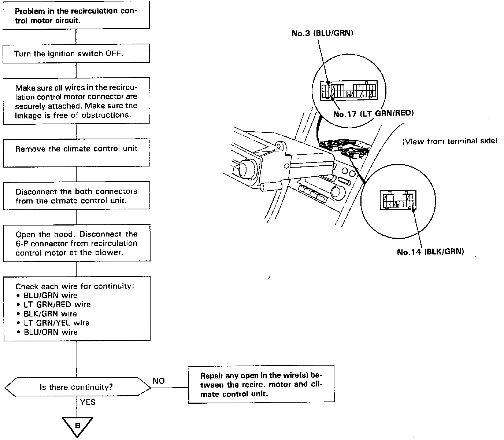
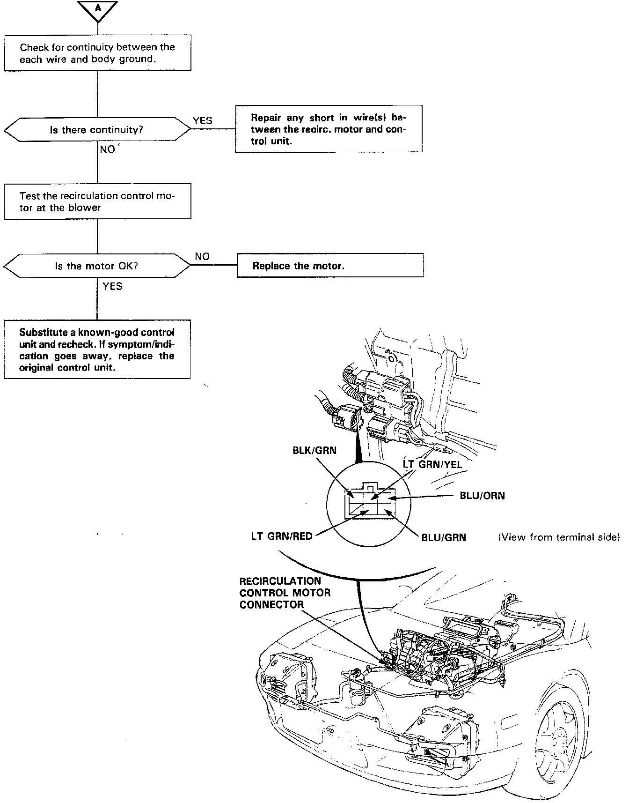

Recirculation Control Motor
Recirculation Control MotorSelf-diagnosis indicator light H comes on: Indicates a problem in the recirculation control motor circuit. Use a digital multimeter (KS-AHM32-003) to check it.
The recirculation control motor regulates the fresh/recirc door according to output from the control unit.
Part A:

Part B:
